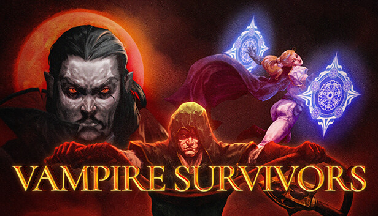
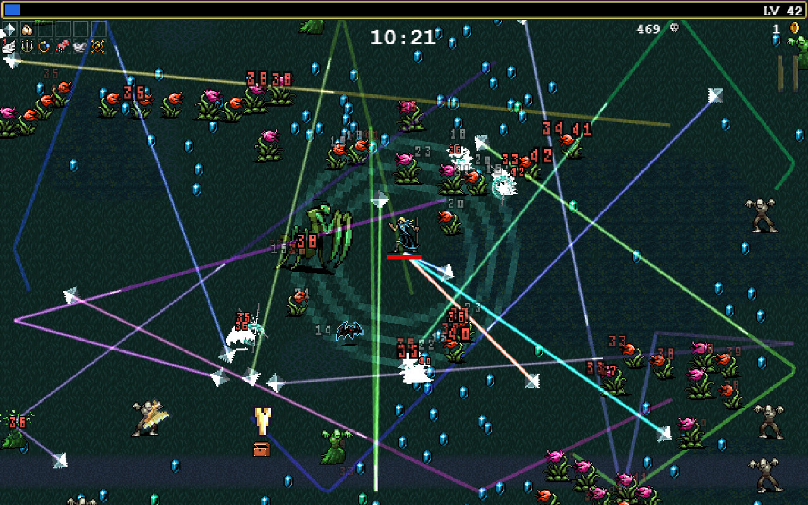

遊戲介紹
4. Vampire Survivors (吸血鬼倖存者)

是一款強調簡單玩法跟roguelite元素的遊戲，遊戲一局平均約在15~30分鐘左右，玩家要想辦法在這段時間內存活下來。

怪物會從四面八方而來，擊倒怪物可以獲得經驗值，有時會有金幣(用來永久升級的貨幣)，當升級時，會出現3~4個選項升級，這些選項中會是武器與配件。這款遊戲在2022年時，可說是現象級的遊戲，快節奏加上有趣的隨機性，席捲全球玩家，而且價格親民，在2022年時為66元(NTD)。
可以體驗到爽爽割草的感覺，常常打開玩一下，時間就不見了。
在2022年後，也有了一大堆參考這款遊戲而來的新作品，在玩家間通常稱這類遊戲為類倖存者遊戲。
巴哈GNN介紹連結：點此前往